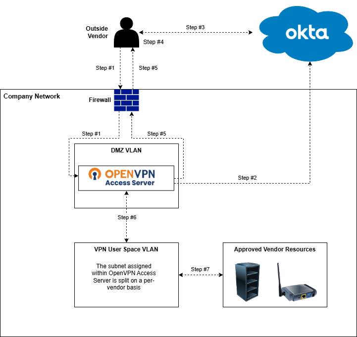

Overview
Designed and implemented an enterprise OpenVPN Access Server solution to provide secure, segmented access for external vendors using Okta-based authentication, local administrative separation, and network isolation.
The platform enabled vendors to access required internal resources without granting broad network access, while maintaining clear separation between administrative accounts, vendor accounts, and per-vendor access boundaries.
Key Highlights
- Designed secure third-party VPN access using centralized identity provider integration
- Implemented network segmentation through VLAN-based access boundaries
- Separated administrative authentication from vendor authentication for stronger access control
- Integrated centralized vendor authentication with Okta while retaining local administrative access
- Built custom Icinga monitoring to validate service availability and reduce false positives
- Supported vendor onboarding and access management through defined account and group structures
Architecture Diagram

Click diagram to enlarge.
Architecture Explanation
The OpenVPN Access Server was positioned as a controlled access point between external vendors and internal organization resources. Vendor users authenticated through Okta and were assigned to OpenVPN groups that mapped to defined access boundaries.
Administrative access was intentionally separated from vendor access. Administrative and non-administrative access paths were separated to reduce privilege risk.
Network access was segmented by vendor group, reducing the risk of over-permissioned access and ensuring vendors could only reach the internal resources required for their work.
Access Control Design
- Administrative accounts: Local authentication, used only for platform administration
- Vendor accounts: Okta-authenticated, non-administrative VPN users
- Vendor groups: Used to organize access by vendor and apply appropriate network boundaries
- Network segmentation: VLAN-based access design limited vendor reachability to approved resources
Monitoring Approach
Icinga monitoring was implemented to validate OpenVPN Access Server availability without generating noisy or misleading alerts. The monitoring focused on whether the VPN service was running, reachable, and operational rather than alerting on client connection counts.
Improved monitoring checks to reduce false positives and provide cleaner service-health signals, and returned clean OK/CRITICAL states to Icinga. This improved alert reliability while preserving compatibility with existing monitoring patterns.
Challenges and Solutions
-
Problem: External vendors required secure access to internal resources without broad network exposure
Solution: Designed a segmented VPN access model using OpenVPN groups and network segmentation -
Problem: Administrative and vendor authentication needed to remain separate
Solution: Used local authentication for administrative accounts and Okta SAML authentication for vendor accounts -
Problem: Native monitoring produced noisy output and false positives
Solution: Built a custom Icinga wrapper to normalize monitoring results and suppress non-actionable errors -
Problem: Vendor onboarding required repeatable access management
Solution: Standardized vendor grouping and access patterns within OpenVPN Access Server
Outcome
Delivered a secure vendor access platform that enabled external partners to reach required internal resources while preserving strong access boundaries and administrative separation.
The implementation improved vendor onboarding, reduced access risk through segmentation, and provided reliable operational monitoring through Icinga.